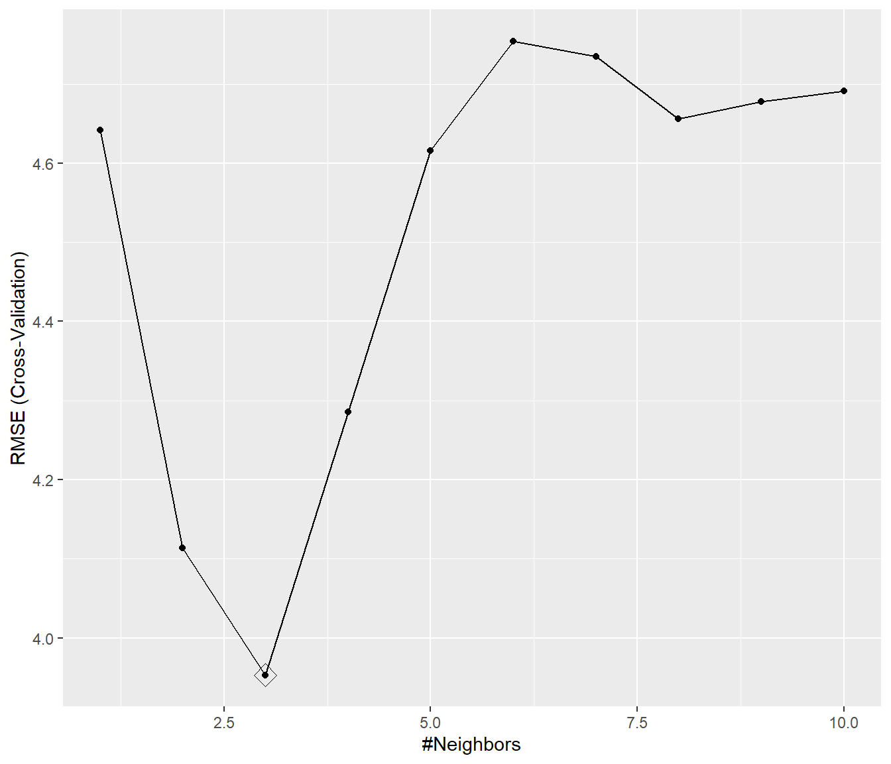

1.6 Introducción al paquete caret
Como ya se comentó en la Sección 1.2.2, el paquete caret (abreviatura de Classification And REgression Training) proporciona una interfaz unificada que simplifica el proceso de modelado empleando la mayoría de los métodos de AE implementados en R (actualmente admite 238 métodos; ver el Capítulo 6 del manual de este paquete). Además de proporcionar rutinas para los principales pasos del proceso, incluye también numerosas funciones auxiliares que permitirían implementar nuevos procedimientos.
Enlaces:
La función principal es train() (descrita más adelante), que incluye un parámetro method que permite establecer el modelo mediante una cadena de texto. Podemos obtener información sobre los modelos disponibles con las funciones getModelInfo() y modelLookup() (puede haber varias implementaciones del mismo método con distintas configuraciones de hiperparámetros; también se pueden definir nuevos modelos, ver el Capítulo 13 del manual).
library(caret)
names(getModelInfo()) # Listado de todos los métodos disponibles## [1] "ada" "AdaBag" "AdaBoost.M1"
## [4] "adaboost" "amdai" "ANFIS"
## [7] "avNNet" "awnb" "awtan"
## [10] "bag" "bagEarth" "bagEarthGCV"
## [13] "bagFDA" "bagFDAGCV" "bam"
## [16] "bartMachine" "bayesglm" "binda"
## [19] "blackboost" "blasso" "blassoAveraged"
## [22] "bridge" "brnn" "BstLm"
## [25] "bstSm" "bstTree" "C5.0"
## [28] "C5.0Cost" "C5.0Rules" "C5.0Tree"
## [31] "cforest" "chaid" "CSimca"
## [34] "ctree" "ctree2" "cubist"
## [37] "dda" "deepboost" "DENFIS"
## [40] "dnn" "dwdLinear" "dwdPoly"
## [43] "dwdRadial" "earth" "elm"
## [46] "enet" "evtree" "extraTrees"
## [49] "fda" "FH.GBML" "FIR.DM"
## [52] "foba" "FRBCS.CHI" "FRBCS.W"
## [55] "FS.HGD" "gam" "gamboost"
## [58] "gamLoess" "gamSpline" "gaussprLinear"
## [61] "gaussprPoly" "gaussprRadial" "gbm_h2o"
## [64] "gbm" "gcvEarth" "GFS.FR.MOGUL"
## [67] "GFS.LT.RS" "GFS.THRIFT" "glm.nb"
## [70] "glm" "glmboost" "glmnet_h2o"
## [73] "glmnet" "glmStepAIC" "gpls"
## [76] "hda" "hdda" "hdrda"
## [79] "HYFIS" "icr" "J48"
## [82] "JRip" "kernelpls" "kknn"
## [85] "knn" "krlsPoly" "krlsRadial"
## [88] "lars" "lars2" "lasso"
## [91] "lda" "lda2" "leapBackward"
## [94] "leapForward" "leapSeq" "Linda"
## [97] "lm" "lmStepAIC" "LMT"
## [100] "loclda" "logicBag" "LogitBoost"
## [103] "logreg" "lssvmLinear" "lssvmPoly"
## [106] "lssvmRadial" "lvq" "M5"
## [109] "M5Rules" "manb" "mda"
## [112] "Mlda" "mlp" "mlpKerasDecay"
## [115] "mlpKerasDecayCost" "mlpKerasDropout" "mlpKerasDropoutCost"
## [118] "mlpML" "mlpSGD" "mlpWeightDecay"
## [121] "mlpWeightDecayML" "monmlp" "msaenet"
## [124] "multinom" "mxnet" "mxnetAdam"
## [127] "naive_bayes" "nb" "nbDiscrete"
## [130] "nbSearch" "neuralnet" "nnet"
## [133] "nnls" "nodeHarvest" "null"
## [136] "OneR" "ordinalNet" "ordinalRF"
## [139] "ORFlog" "ORFpls" "ORFridge"
## [142] "ORFsvm" "ownn" "pam"
## [145] "parRF" "PART" "partDSA"
## [148] "pcaNNet" "pcr" "pda"
## [151] "pda2" "penalized" "PenalizedLDA"
## [154] "plr" "pls" "plsRglm"
## [157] "polr" "ppr" "PRIM"
## [160] "protoclass" "qda" "QdaCov"
## [163] "qrf" "qrnn" "randomGLM"
## [166] "ranger" "rbf" "rbfDDA"
## [169] "Rborist" "rda" "regLogistic"
## [172] "relaxo" "rf" "rFerns"
## [175] "RFlda" "rfRules" "ridge"
## [178] "rlda" "rlm" "rmda"
## [181] "rocc" "rotationForest" "rotationForestCp"
## [184] "rpart" "rpart1SE" "rpart2"
## [187] "rpartCost" "rpartScore" "rqlasso"
## [190] "rqnc" "RRF" "RRFglobal"
## [193] "rrlda" "RSimca" "rvmLinear"
## [196] "rvmPoly" "rvmRadial" "SBC"
## [199] "sda" "sdwd" "simpls"
## [202] "SLAVE" "slda" "smda"
## [205] "snn" "sparseLDA" "spikeslab"
## [208] "spls" "stepLDA" "stepQDA"
## [211] "superpc" "svmBoundrangeString" "svmExpoString"
## [214] "svmLinear" "svmLinear2" "svmLinear3"
## [217] "svmLinearWeights" "svmLinearWeights2" "svmPoly"
## [220] "svmRadial" "svmRadialCost" "svmRadialSigma"
## [223] "svmRadialWeights" "svmSpectrumString" "tan"
## [226] "tanSearch" "treebag" "vbmpRadial"
## [229] "vglmAdjCat" "vglmContRatio" "vglmCumulative"
## [232] "widekernelpls" "WM" "wsrf"
## [235] "xgbDART" "xgbLinear" "xgbTree"
## [238] "xyf"# str(getModelInfo("knn", regex = TRUE)) # Por defecto devuelve coincidencias parciales
modelLookup("knn") # Información sobre hiperparámetros## model parameter label forReg forClass probModel
## 1 knn k #Neighbors TRUE TRUE TRUEEste paquete permite, entre otras cosas:
Partición de los datos
createDataPartition(y, p = 0.5, list = TRUE, ...): crea particiones balanceadas de los datos.En el caso de que la respuesta
ysea categórica realiza el muestreo en cada clase. Para respuestas numéricas emplea cuantiles (definidos por el argumentogroups = min(5, length(y))).p: proporción de datos en la muestra de entrenamiento.list: lógico; determina si el resultado es una lista con las muestras o un vector (o matriz) de índices
Funciones auxiliares:
createFolds(),createMultiFolds(),groupKFold(),createResample(),createTimeSlices()
Análisis descriptivo:
featurePlot()Preprocesado de los datos:
La función principal es
preProcess(x, method = c("center", "scale"), ...), aunque se puede integrar en el entrenamiento (funcióntrain()) para estimar los parámetros de las transformaciones a partir de la muestra de entrenamiento y posteriormente aplicarlas automáticamente al hacer nuevas predicciones (p.e. en la muestra de test).El parámetro
methodpermite establecer una lista de procesados:Imputación:
"knnImpute","bagImpute"o"medianImpute"Creación y transformación de variables explicativas:
"center","scale","range","BoxCox","YeoJohnson","expoTrans","spatialSign"Funciones auxiliares:
dummyVars()…Selección de predictores y extracción de componentes:
"corr","nzv","zv","conditionalX","pca","ica"Funciones auxiliares:
rfe()…
Entrenamiento y selección de los hiperparámetros del modelo:
La función principal es
train(formula, data, method = "rf", trControl = trainControl(), tuneGrid = NULL, tuneLength = 3, ...)trControl: permite establecer el método de remuestreo para la evaluación de los hiperparámetros y el método para seleccionar el óptimo, incluyendo las medidas de precisión. Por ejemplotrControl = trainControl(method = "cv", number = 10, selectionFunction = "oneSE").Los métodos disponibles son:
"boot","boot632","optimism_boot","boot_all","cv","repeatedcv","LOOCV","LGOCV","timeslice","adaptive_cv","adaptive_boot"o"adaptive_LGOCV"tuneLengthytuneGrid: permite establecer cuantos hiperparámetros serán evaluados (por defecto 3) o una rejilla con las combinaciones de hiperparámetros....permite establecer opciones específicas de los métodos.
También admite matrices
x,yen lugar de fórmulas (o recetas:recipe()).Si se imputan datos en el preprocesado será necesario establecer
na.action = na.pass.
Evaluación de los modelos
postResample(pred, obs, ...): regresiónconfusionMatrix(pred, obs, ...): clasificación- Funciones auxiliares:
twoClassSummary(),prSummary()…
- Funciones auxiliares:
Analisis de la importancia de los predictores:
varImp(): interfaz a las medidas específicas de los métodos de aprendizaje supervisado (Sección 15.1) o medidas genéricas (Sección 15.2).
Ejemplo regresión con KNN:
# caret
data(Boston, package = "MASS")
library(caret)
# Partición
set.seed(1)
itrain <- createDataPartition(Boston$medv, p = 0.8, list = FALSE)
train <- Boston[itrain, ]
test <- Boston[-itrain, ]
# Entrenamiento y selección de hiperparámetros
set.seed(1)
knn <- train(medv ~ ., data = train,
method = "knn",
preProc = c("center", "scale"),
tuneGrid = data.frame(k = 1:10),
trControl = trainControl(method = "cv", number = 10))
plot(knn)
ggplot(knn, highlight = TRUE)
knn$bestTune## k
## 3 3knn$finalModel## 3-nearest neighbor regression model# Interpretación
varImp(knn)## loess r-squared variable importance
##
## Overall
## lstat 100.00
## rm 88.26
## indus 36.29
## ptratio 33.27
## tax 30.58
## crim 28.33
## nox 23.44
## black 21.29
## age 20.47
## rad 17.16
## zn 15.11
## dis 14.35
## chas 0.00# Evaluación
postResample(predict(knn, newdata = test), test$medv)## RMSE Rsquared MAE
## 4.960971 0.733945 2.724242Un comentario final:
“While I’m still supporting caret, the majority of my development effort has gone into the tidyverse modeling packages (called tidymodels)”.
— Max Kuhn, autor del paquete
caret(actualmente ingeniero de software en RStudio).
Kuhn, M. y Wickham, H. (2020). Tidymodels: a collection of packages for modeling and machine learning using tidyverse principles. Version 0.1.1 (2020-07-14). https://www.tidymodels.org.